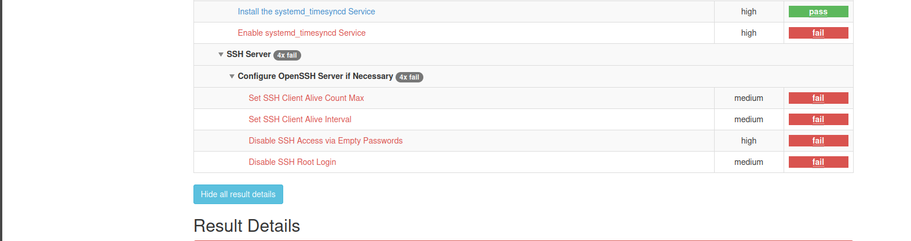
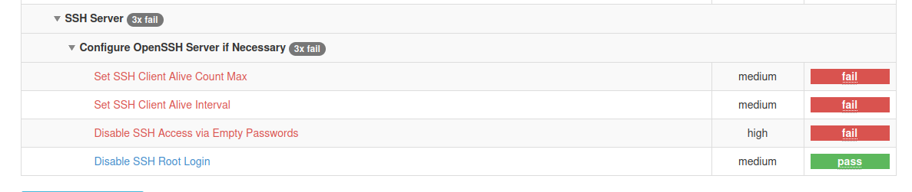

Audit technique automatisé et cartographie des risques (OpenSCAP + EBIOS RM)
Ce projet met en place une chaîne complète d’audit technique et d’analyse de risques
sur un serveur Ubuntu déjà utilisé dans un laboratoire IAM. L’objectif est de montrer
la capacité à conduire un audit de conformité automatisé, à interpréter les résultats
techniques et à les traduire en scénarios de risques formalisés suivant l’approche
EBIOS RM.
Le travail se déroule en quatre phases : réalisation d’un scan de conformité avec
OpenSCAP, sélection et formalisation de plusieurs risques à partir des résultats,
rédaction et exécution d’un script de durcissement, puis rescan pour vérifier
l’efficacité des mesures.
Contexte et objectif
Le contexte général est celui d’un serveur applicatif Linux exposant une API, déjà
utilisé dans un laboratoire de provisioning IAM. Dans de nombreuses organisations,
ces serveurs sont critiques et doivent respecter des référentiels de sécurité
comme les recommandations CIS ou les guides de l’ANSSI.
L’objectif du projet est double. D’une part, mettre en œuvre un
audit technique automatisé à l’aide d’OpenSCAP et d’un profil de conformité pour
Ubuntu 20.04. D’autre part, sélectionner plusieurs non-conformités significatives
et les traduire en fiches de risques, structurées selon les principes d’EBIOS RM
(biens, sources de menace, scénarios, impacts et mesures de sécurité).
Ce projet illustre ainsi le passage d’un diagnostic purement technique
à une vision orientée risques, en s’appuyant sur des preuves générées
automatiquement et sur des mesures de remédiation concrètes.
Périmètre et architecture audités
Le travail s’appuie sur l’infrastructure virtualisée du laboratoire IAM.
La machine cible de l’audit est le serveur applicatif
iam-app (Ubuntu 20.04), qui héberge une API Flask et tourne
comme service système. Les autres machines de l’environnement ne sont pas
concernées par ce projet et servent uniquement de contexte.
Sur la machine iam-app, l’outil OpenSCAP est installé à partir
des dépôts de la distribution. La vérification de l’installation se fait
avec les commandes suivantes.
Ces commandes confirment la présence de l’outil
oscap et des spécifications supportées (XCCDF, OVAL, CPE, CVSS),
ce qui permet de lancer des évaluations de conformité à partir de contenus
SCAP existants pour Ubuntu.
Démarche d’audit et de remédiation
Phase 1 – Scan initial de conformité
La première phase consiste à exécuter un audit de conformité sur la machine cible.
Le profil retenu est le profil standard pour Ubuntu 20.04 fourni par le
SCAP Security Guide. Le scan est lancé avec la commande suivante.
Pendant l’exécution, OpenSCAP affiche pour chaque règle un intitulé, un identifiant
et un résultat. Le rapport montre notamment plusieurs non-conformités significatives
comme l’absence de partition dédiée pour certains répertoires, l’absence d’activation
de l’ASLR et la possibilité de connexion SSH directe en root.
Le rapport HTML généré est ensuite copié dans le répertoire partagé afin d’être
consulté sur la machine hôte.
cp rapport.html /vagrant/audit_initial_FAIL.html

Extrait du rapport initial. La règle Disable SSH Root Login
et plusieurs protections système apparaissent en échec.
Phase 2 – Sélection et formalisation des risques (EBIOS RM)
À partir des résultats du scan, trois vulnérabilités ont été retenues afin
de couvrir des dimensions différentes de la sécurité : gestion des accès,
protection du noyau et architecture du système de fichiers.
La première vulnérabilité concerne la règle
sshd_disable_root_login, qui indique que le compte
root est autorisé à se connecter directement en SSH.
Elle est analysée comme un risque fort d’accès non autorisé aux fonctions
d’administration. La fiche de risque établit le lien entre cette configuration
et un scénario d’attaque par force brute sur l’identifiant
root, avec des impacts critiques sur la confidentialité,
l’intégrité et la disponibilité.
La deuxième vulnérabilité est liée à la règle
sysctl_kernel_randomize_va_space, qui vérifie l’activation
de la randomisation de l’espace d’adressage (ASLR). Son échec met en évidence
un déficit de protection contre certaines attaques mémoire. La fiche de risque
associe cette configuration à un scénario d’exploitation de vulnérabilités
applicatives de type dépassement de tampon, avec un impact élevé sur
l’intégrité et la stabilité des processus applicatifs.
La troisième vulnérabilité retenue concerne l’absence de partition séparée
pour /var (partition_for_var). Cette configuration
est analysée comme un risque de perte de disponibilité en cas de saturation
de l’espace disque par les journaux ou des fichiers temporaires. La fiche de
risque décrit un scénario où une montée en volume des logs entraîne une
saturation de la partition racine et un arrêt du système.
Ces analyses sont regroupées dans un document dédié
EBIOS_Risk_Analysis.md qui formalise, pour chaque vulnérabilité,
le bien support, le bien essentiel, la source de menace, le scénario,
les impacts et les mesures de sécurité recommandées.
Phase 3 – Script de durcissement automatisé
La troisième phase consiste à traduire les mesures de sécurité identifiées
en un script de durcissement exécutable sur le serveur. L’objectif est
d’automatiser la correction des non-conformités relatives à SSH et à l’ASLR.
Sur la machine iam-app, un script
hardening.sh est créé. Il désactive le login SSH en root en
modifiant le fichier /etc/ssh/sshd_config, puis redémarre
le service. Il active ensuite la randomisation de l’espace mémoire via
sysctl et met à jour le fichier
/etc/sysctl.conf pour rendre la modification persistante.
chmod +x hardening.sh
sudo ./hardening.sh
L’exécution du script affiche les étapes de durcissement et permet de vérifier
que les commandes se sont déroulées correctement. Ce script est versionné
dans le dépôt du projet comme élément de preuve et de réutilisation.
Phase 4 – Rescan et validation des corrections
La dernière phase consiste à relancer un audit OpenSCAP avec le même profil
que lors du scan initial. Cette répétition permet de valider l’effet des
corrections et de disposer d’un rapport « avant/après ».
L’analyse du nouveau rapport montre que les règles
Disable SSH Root Login et
Enable Randomized Layout of Virtual Address Space sont
désormais conformes. Les autres recommandations qui n’ont pas été traitées
dans ce laboratoire, notamment celles nécessitant une refonte du
partitionnement, restent visibles dans le rapport et sont documentées
comme pistes d’évolution architecturale.

Extrait du rapport après durcissement. Les règles ciblées par le script
de hardening passent en conformité, ce qui valide les mesures appliquées.
Résultats obtenus
À l’issue du projet, le serveur applicatif dispose d’un niveau de conformité
amélioré vis-à-vis du profil standard OpenSCAP pour Ubuntu 20.04. Les faiblesses
identifiées sur la configuration SSH et sur l’activation de l’ASLR sont corrigées
de manière reproductible grâce au script de durcissement.
Le projet produit plusieurs livrables complémentaires. Le premier est le rapport
d’audit initial, qui documente l’état de la machine avant toute modification.
Le second est le rapport après remédiation, qui matérialise la diminution du
nombre de non-conformités sur les règles visées. Le troisième est une analyse
de risques structurée qui fait le lien entre les résultats techniques et les
enjeux de sécurité. Le dernier est le script hardening.sh qui
peut être réutilisé et étendu à d’autres environnements.
L’ensemble illustre une démarche complète allant de la collecte de preuves
automatisées jusqu’à la proposition de mesures de sécurité argumentées et
vérifiées par un nouveau contrôle.
Compétences démontrées
Ce projet met en évidence la capacité à utiliser un outil d’audit automatisé
standardisé (OpenSCAP) pour évaluer la conformité d’un système Linux,
à interpréter les résultats et à sélectionner les écarts les plus
significatifs au regard des enjeux de sécurité.
Il montre également la maîtrise des concepts d’analyse de risques inspirés
d’EBIOS RM, en structurant les vulnérabilités techniques en biens,
sources de menace, scénarios, impacts et mesures de traitement. Enfin,
il illustre un savoir-faire en durcissement automatisé par script,
ainsi que l’habitude de valider les corrections par un rescan.